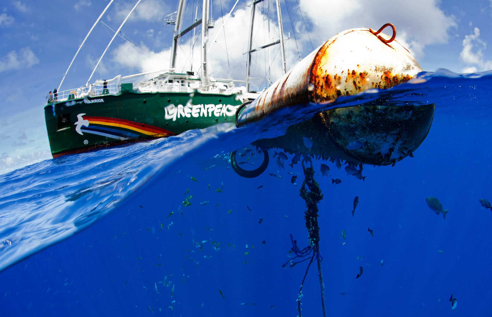

-
1st image (configuration currently used by P4)
Resize: Triangle
Sharpening: unsharpMask ( Radius 0.25, Sigma 0.25, Amount 8, Threshold 0.065 )
Compression: Interlace_No
Quality: 90
Size: 521.4 kb
Size: 600.6 kb
-
2nd image
Resize: Lanczos
Sharpening: unsharpMask( Radius 0.25, Sigma 0.25, Amount 8, Threshold 0.065 )
Compression: Interlace_Plane
Quality: 82
Size: 381.9 kb (-27%)
Size: 448.6 kb
-
3rd image
Resize: Lanczos
Sharpening: adaptiveSharpen( Radius 5, Sigma 1.5 )
Compression: Interlace_Plane
Quality: 82
Size: 462.5 kb (-12%)
Size: 519.2 kb
-
4th image
Resize: Gaussian
Sharpening: unsharpMask( Radius 0.25, Sigma 0.25, Amount 8, Threshold 0.065 )
Compression: Interlace_Plane
Quality: 82
Size: 357.6 kb (-32%)
Size: 426.5 kb

-
5th image
Resize: Lanczos
Sharpening: unsharpMask( Radius 1, Sigma 0.45, Amount 3, Threshold 0 )
Compression: Interlace_Plane
Quality: 82
Size: 463.5 kb (-11%)
Size: 522.1 kb
-
6th image
Resize: Lanczos
Sharpening: unsharpMask( Radius 1, Sigma 0.45, Amount 3, Threshold 0 )
Compression: Interlace_Plane
Quality: 60
Size: 277.4 kb (-47%)
Size: 322.7 kb
-
7th image
Resize: Hamming
Sharpening: unsharpMask ( Radius 0.25, Sigma 0.25, Amount 8, Threshold 0.065 )
Compression: Interlace_No
Quality: 90
Size: 388.1 kb

Size: 452.8.6 kb
-
8th image
Resize: Manual
Cropped to 2048 . sharpen . compressed to 20%
Size: 170 kb (-68%)